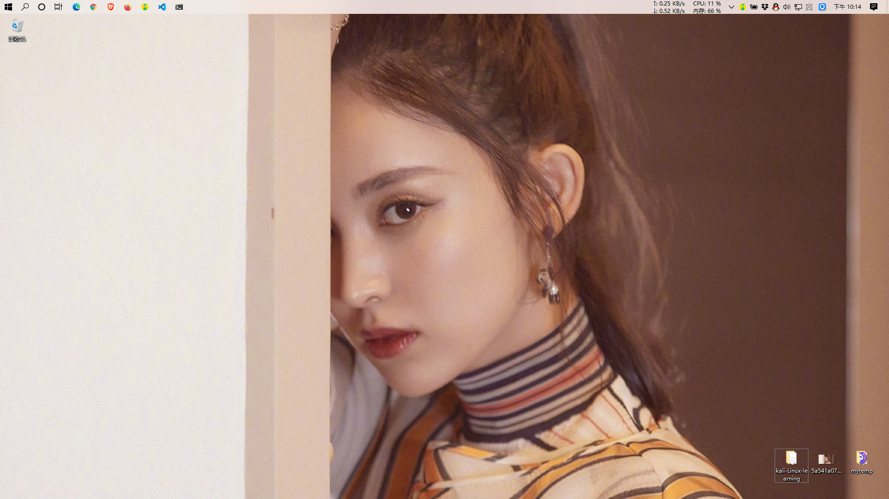
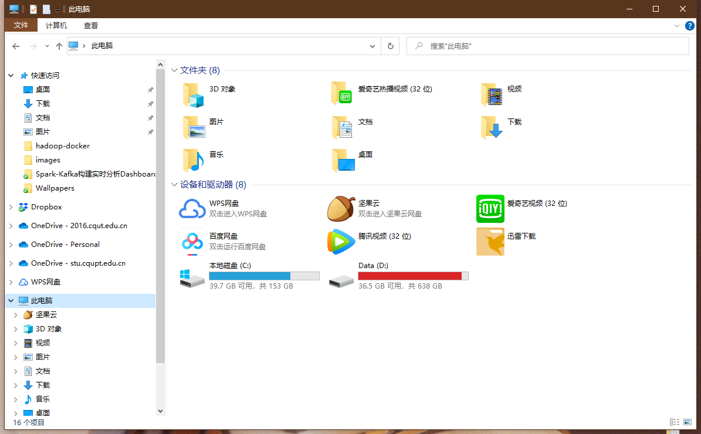
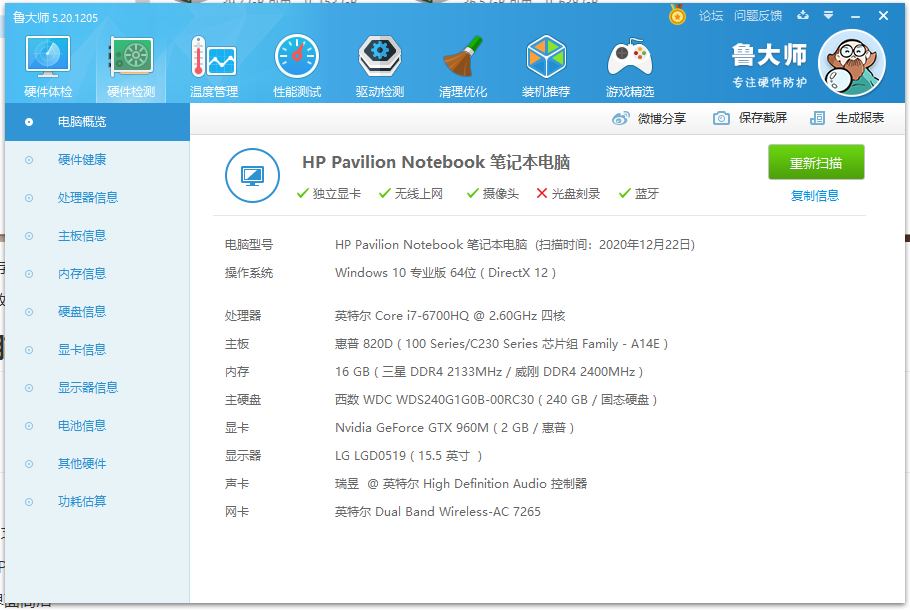
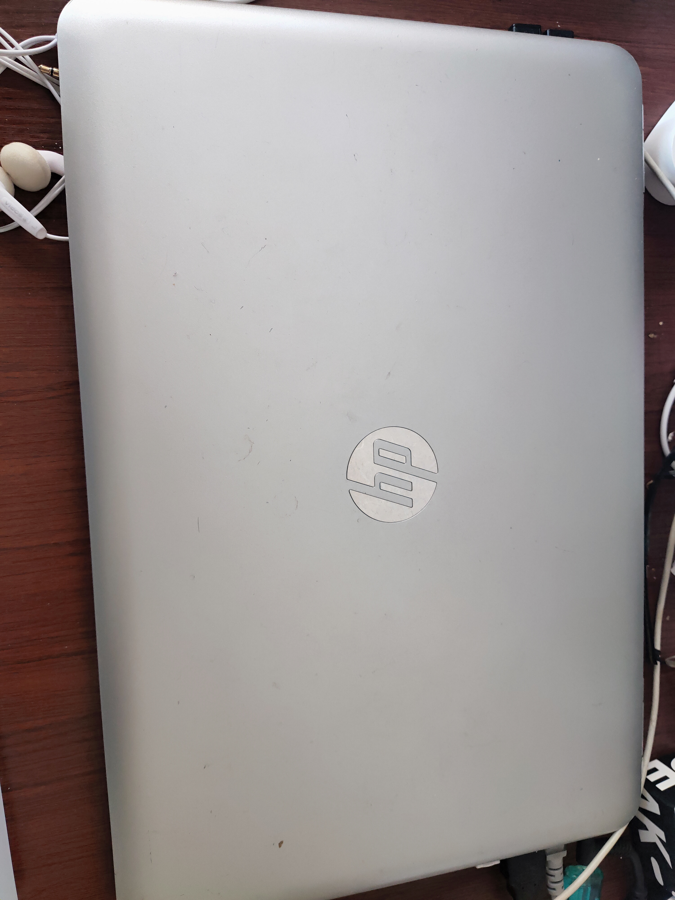
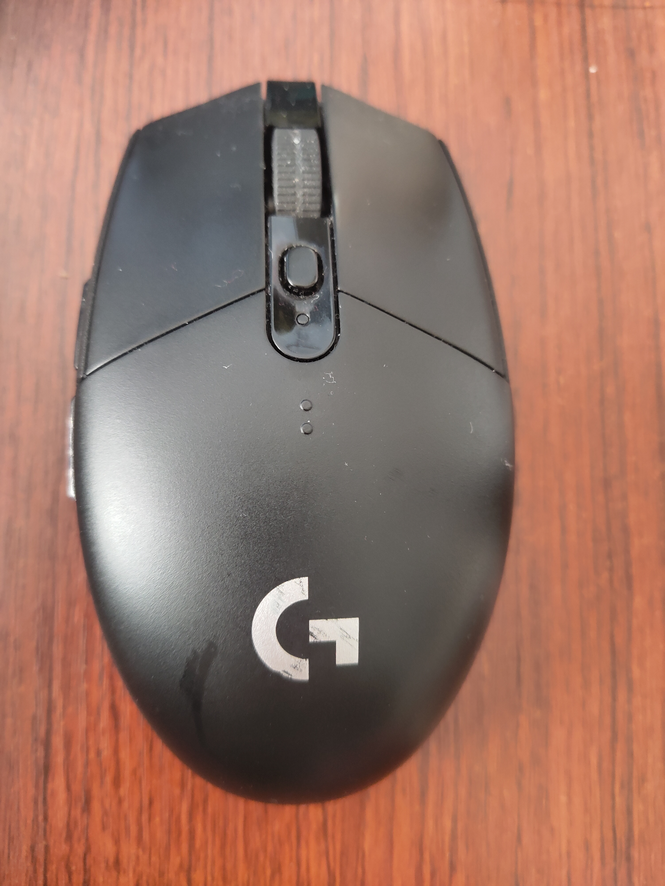

2021 02 11 我的 Win10 PC
Posted

My Windows 10 in 2021 2 月
目前呢，我主要使用两套系统，Windows10 和 ArchLinux

磁盘分区

- C 盘 主要是存放应用程序
- D盘 主要存放下载的数据，方便重装系统
笔记本电脑
主力机是2016年高中毕业买的惠普光影精灵2代:
- i7-6700HQ 四核高性能处理器
- GTX-960M 2G超大独立显存
- 16G 超大内存
- 240G SSD + 1T HDD



软件
软件
- 浏览器
- 视频和音乐
- 输入法
- 开发
- 文档
- 通讯
- 游戏
- NBA2KOnline2 氪金、氪金
- 网盘
- 下载器
外设
- 罗技 G304 鼠标

- IKBC W200 无线键盘

- 耳机 原道 淘宝10元 如上图
- 北通无线游戏手柄